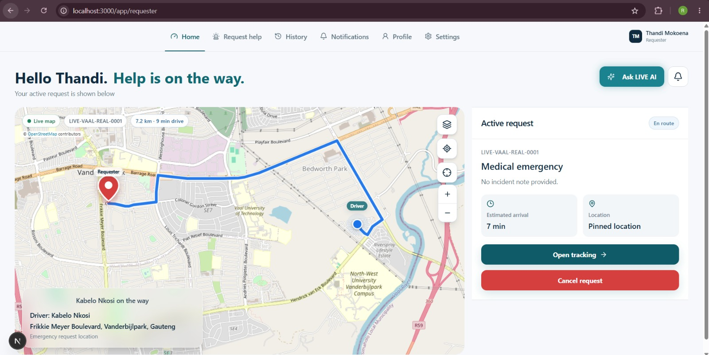
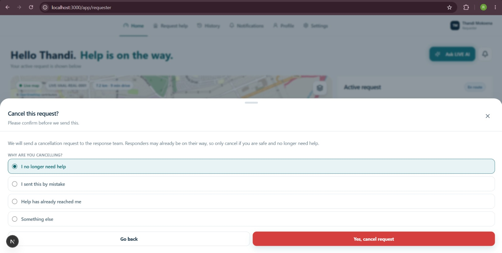
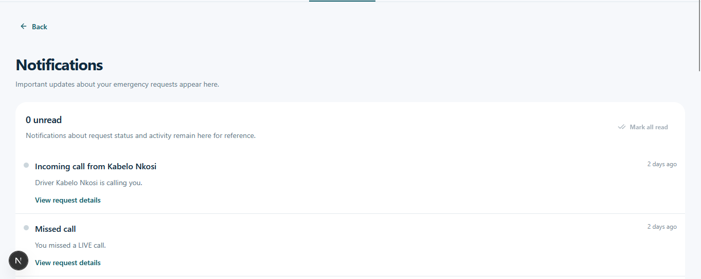

Team 1
Requester experience
11 code files and a DOCX report with four embedded screenshots.
Archive source versus the current workspace. Review only: nothing from either ZIP was copied into the app.
11 code files and a DOCX report with four embedded screenshots.
Six page files; no narrative document or screenshots in the archive.
The teams work on different areas, so the ZIPs are not two versions of the same files.
Nine have matching paths in the workspace; the cancel-button and display-label helper files do not.
| File | Archive lines | Workspace lines | Workspace delta vs archive* |
|---|---|---|---|
| requester/history/page.tsx | 307 | 486 | +259 / ?80 |
| requester/new/page.tsx | 717 | 1,903 | +1,584 / ?398 |
| requester/page.tsx | 935 | 1,473 | +795 / ?257 |
| requester/track/[id]/page.tsx | 809 | 1,160 | +701 / ?350 |
| components/maps/live-response-map.tsx | 605 | 1,551 | +1,082 / ?136 |
| components/requester/cancel-request-button.tsx | new file | missing | No matching file |
| components/requester/profile-content.tsx | 188 | 434 | +338 / ?92 |
| components/requests/request-details-sheet.tsx | 114 | 116 | +29 / ?27 |
| components/requests/request-list-item.tsx | 106 | 201 | +114 / ?19 |
| lib/display-labels.ts | new file | missing | No matching file |
| lib/utils.ts | 82 | 160 | +103 / ?25 |
*Line deltas are an aligned text comparison, not a semantic score.
| File | Archive lines | Workspace lines | Workspace delta vs archive* |
|---|---|---|---|
| admin/audit/page.tsx | 482 | 475 | +192 / ?199 |
| admin/page.tsx | 532 | 514 | +18 / ?36 |
| auditor/application/page.tsx | 374 | 333 | +47 / ?88 |
| auditor/audit/page.tsx | 397 | 310 | +6 / ?93 |
| auditor/integration/page.tsx | 326 | 325 | +116 / ?117 |
| auditor/security/page.tsx | 363 | 308 | +8 / ?63 |
Team 5?s largest rewrites by aligned line count are the Admin audit page and Auditor integration page. The archive has no attached explanation describing those code changes.
These are screenshots embedded in the submitted report, not new browser captures.



cancel-request-button.tsx file is absent, and a search of the current requester pages found no cancel-request action or confirmation flow. The workspace does have cancellation status display text. The archive?s display-labels.ts helper is also absent; the workspace instead has status formatting in lib/utils.ts and requester translations in lib/requester-ui.ts.The Team 1 report also describes back links, friendlier statuses, request-question selection states, and skip-question behavior. The current workspace contains examples of those patterns; this report does not claim the two implementations are identical.
Source comparison: the two user-provided ZIP archives against files in the current workspace. Archive document text was treated as project documentation, not as instructions to modify the workspace. No project source files were changed to produce this report.